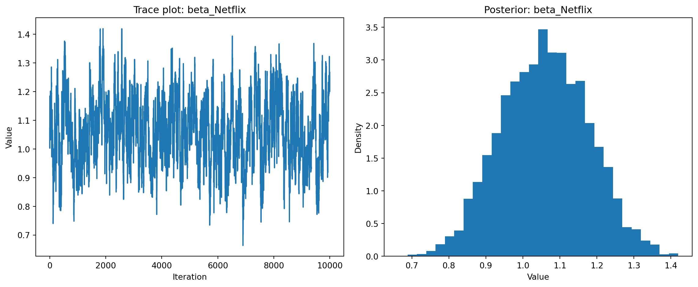

This assignment expores two methods for estimating the MNL model: (1) via Maximum Likelihood, and (2) via a Bayesian approach using a Metropolis-Hastings MCMC algorithm.
1. Likelihood for the Multi-nomial Logit (MNL) Model
Suppose we have \(i=1,\ldots,n\) consumers who each select exactly one product \(j\) from a set of \(J\) products. The outcome variable is the identity of the product chosen \(y_i \in \{1, \ldots, J\}\) or equivalently a vector of \(J-1\) zeros and \(1\) one, where the \(1\) indicates the selected product. For example, if the third product was chosen out of 3 products, then either \(y=3\) or \(y=(0,0,1)\) depending on how we want to represent it. Suppose also that we have a vector of data on each product \(x_j\) (eg, brand, price, etc.).
We model the consumer’s decision as the selection of the product that provides the most utility, and we’ll specify the utility function as a linear function of the product characteristics:
\[ U_{ij} = x_j'\beta + \epsilon_{ij} \]
where \(\epsilon_{ij}\) is an i.i.d. extreme value error term.
The choice of the i.i.d. extreme value error term leads to a closed-form expression for the probability that consumer \(i\) chooses product \(j\):
A clever way to write the individual likelihood function for consumer \(i\) is the product of the \(J\) probabilities, each raised to the power of an indicator variable (\(\delta_{ij}\)) that indicates the chosen product:
We will simulate data from a conjoint experiment about video content streaming services. We elect to simulate 100 respondents, each completing 10 choice tasks, where they choose from three alternatives per task. For simplicity, there is not a “no choice” option; each simulated respondent must select one of the 3 alternatives.
Each alternative is a hypothetical streaming offer consistent of three attributes: (1) brand is either Netflix, Amazon Prime, or Hulu; (2) ads can either be part of the experience, or it can be ad-free, and (3) price per month ranges from $4 to $32 in increments of $4.
The part-worths (ie, preference weights or beta parameters) for the attribute levels will be 1.0 for Netflix, 0.5 for Amazon Prime (with 0 for Hulu as the reference brand); -0.8 for included adverstisements (0 for ad-free); and -0.1*price so that utility to consumer \(i\) for hypothethical streaming service \(j\) is
where the variables are binary indicators and \(\varepsilon\) is Type 1 Extreme Value (ie, Gumble) distributed.
The following code provides the simulation of the conjoint data.
Note
import numpy as npimport pandas as pd# set seed for reproducibilitynp.random.seed(123)# define attributesbrand = ["N", "P", "H"] # Netflix, Prime, Huluad = ["Yes", "No"]price =list(range(8, 33, 4))# generate all possible profilesprofiles = pd.DataFrame([ (b, a, p) for b in brand for a in ad for p in price], columns=["brand", "ad", "price"])m =len(profiles)# assign part-worth utilities (true parameters)b_util = {"N": 1.0, "P": 0.5, "H": 0}a_util = {"Yes": -0.8, "No": 0.0}def p_util(p): return-0.1* p# number of respondents, choice tasks, and alternatives per taskn_peeps =100n_tasks =10n_alts =3# function to simulate one respondent's datadef sim_one(id): datlist = []for t inrange(1, n_tasks +1): dat = profiles.sample(n=n_alts).copy() dat.insert(0, "task", t) dat.insert(0, "resp", id) dat["v"] = ( dat["brand"].map(b_util) + dat["ad"].map(a_util) + dat["price"].apply(p_util) ).round(10) dat["e"] =-np.log(-np.log(np.random.uniform(size=n_alts))) dat["u"] = dat["v"] + dat["e"] dat["choice"] = (dat["u"] == dat["u"].max()).astype(int) datlist.append(dat)return pd.concat(datlist, ignore_index=True)# simulate data for all respondentsconjoint_data = pd.concat([sim_one(i) for i inrange(1, n_peeps +1)], ignore_index=True)# remove values unobservable to the researcherconjoint_data = conjoint_data[["resp", "task", "brand", "ad", "price", "choice"]]# clean upfor name indir():if name !="conjoint_data":delglobals()[name]print(conjoint_data.head())
resp task brand ad price choice
0 1 1 P No 32 0
1 1 1 N No 28 0
2 1 1 N No 24 1
3 1 2 H No 28 0
4 1 2 H No 8 1
3. Preparing the Data for Estimation
The “hard part” of the MNL likelihood function is organizing the data, as we need to keep track of 3 dimensions (consumer \(i\), covariate \(k\), and product \(j\)) instead of the typical 2 dimensions for cross-sectional regression models (consumer \(i\) and covariate \(k\)). The fact that each task for each respondent has the same number of alternatives (3) helps. In addition, we need to convert the categorical variables for brand and ads into binary variables.
We implement a Metropolis-Hastings MCMC sampler to estimate the posterior distribution of the parameters. The sampler uses: - 11,000 total steps with 1,000 burn-in iterations - N(0,5) priors for binary variable coefficients - N(0,1) prior for the price coefficient - Multivariate normal proposal distribution
For the Netflix parameter, I visualize both the trace plot and histogram of the posterior distribution. The trace plot helps assess convergence of the MCMC chain by showing how the parameter value evolves over iterations. The histogram shows the shape and spread of the posterior distribution, giving us insight into the uncertainty around our parameter estimate.
import matplotlib.pyplot as pltplt.figure(figsize=(12,5))plt.subplot(1,2,1)plt.plot(posterior_samples[:,0])plt.title("Trace plot: beta_Netflix")plt.xlabel("Iteration")plt.ylabel("Value")plt.subplot(1,2,2)plt.hist(posterior_samples[:,0], bins=30, density=True)plt.title("Posterior: beta_Netflix")plt.xlabel("Value")plt.ylabel("Density")plt.tight_layout()plt.show()

Looking at the results from both estimation approaches, we can compare the posterior means, standard deviations, and intervals from our Bayesian analysis with the maximum likelihood estimates.
Looking at the parameter estimates, we can draw several meaningful insights about consumer preferences for streaming services:
Brand Preferences: Consumers generally prefer Netflix and Amazon Prime over Hulu, which serves as the reference brand in this analysis. The positive coefficients for both Netflix and Prime indicate a higher utility associated with these services compared to Hulu. Furthermore, the coefficient for Netflix is larger than that of Prime, suggesting that, all else equal, consumers have a stronger preference for Netflix. This result is consistent with real-world market dynamics, where Netflix has historically maintained a dominant position in the streaming industry.
Price: The negative coefficient for price aligns with economic intuition as the monthly subscription price increases, consumer utility and the probability of choosing that option decrease. The magnitude of this coefficient quantifies how sensitive consumers are to price changes. For each one-dollar increase in price, utility decreases by β_price units. Understanding this tradeoff enables streaming services to optimize their pricing strategies by balancing potential revenue gains from higher prices against potential subscriber losses.
Advertisement Impact: The coefficient for ads is also negative, indicating that consumers generally prefer ad-free experiences. The magnitude of this coefficient suggests that the presence of ads significantly reduces consumer utility, an effect comparable to that of a substantial price increase. This finding underscores the importance of ad-free options in maintaining consumer satisfaction and subscription rates.
Simulation Changes
Instead of assuming that all consumers are the same, the simulation can be made more realistic by allowing each person to have their own unique preferences. Instead of using one set of preferences (like how much people dislike ads or how sensitive they are to price), the model gives each individual their own version of these preferences.
These personal preferences would be based on general trends seen across all consumers, but with room for variation. This means some people might be more sensitive to price, others might care more about having no ads, and some might have a stronger preference for a particular streaming service.
By doing this, the simulation can better reflect real-life behavior, where different people value things differently.